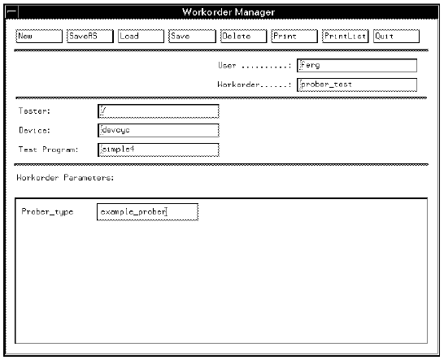

WORKORDER_MANAGER_FORMAT
is a format specifier against which input data will be checked. You would typically use it whenever you want to force the operator to input one particular value. The format you want the data to be, is entered in the Workorder Manager when you create a workorder; later, at execution time, this exact data must be entered.
WORKORDER_MANAGER_FORMAT is used in the <action_parameter> description (part of a <level_section>), namely,
["*"][[<parameter_type>]<name>"="<action>["/"<format_spec>]";"
If, for example, the engineer/supervisor creating the workorder, wants the operator to use only one particular type of prober, they can combine APPLIC_DATA_EDITOR_FORMAT with one of the <access> types (DIALOG_INPUT is the only useful one for WORKORDER_MANAGER_FORMAT) so that when the test program is executed, the user can only enter that value specified by the WORKORDER_MANAGER_FORMAT. For example, with the prober_type line included in the SCREEN_DIALOG section of the wafer_auto application model,
{lot:SCREEN_DIALOG
*prober_type=DIALOG_INPUT/WORKORDER_MANAGER_FORMAT;
*Lot_id=DIALOG_INPUT/REGEXP(nnnn);
*Test_site=APPLIC_DATA_EDITOR_INPUT/REGEXP(string);
*Device_id=APPLIC_DATA_EDITOR_INPUT/REGEXP(string);
*Device_code=APPLIC_DATA_EDITOR_INPUT/REGEXP(string);
*System_id=DIALOG_INPUT/REGEXP(cnnncnn);
:
:
You you are prompted for the type of prober when you first create the workorder. In the figure below, example_prober has been entered.

At execution time, you can only enter example_prober for the entry box prober_type; otherwise an error message is displayed to remind you that Proper_type data format must be example_prober.